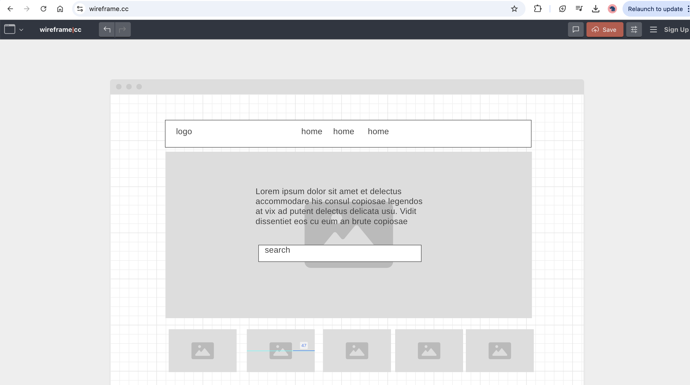

Overview
Purpose
The purpose of this website is to provide real-time weather updates for users, allowing them to easily check current and future weather conditions for any location.
Audience
This site is designed for anyone who wants quick and accurate weather information, including travelers, outdoor enthusiasts, and daily commuters.
Dynamic elements
The site will use JavaScript to fetch real-time weather data from the OpenWeather API. It will dynamically display weather details such as temperature, humidity, wind speed, and a weather icon. Users will be able to search for weather by city or allow location access for automatic detection.
Branding
Website Logo
Style Guide
Color Palette
Palette URL: https://coolors.co/dff2eb-b9e5e8-7ab2d3-4a628a| Primary | Secondary | Accent 1 | Accent 2 |
|---|---|---|---|
| [dff2eb] | [b9e5e8] | [7ab2d3] | [4a628a] |
Typography
Heading Font: Roboto
Paragraph Font: Open Sans
Normal paragraph example
Welcome to Weather Now! Quickly find the latest weather conditions with accurate data powered by OpenWeather API.
Colored paragraph example
Stay updated with real-time weather alerts and plan your day better.
Navigation
Content
Home page
The home page will include a search bar for city-based weather lookups, current location weather details, and a brief introduction to the website.
Weather by City
This page will display detailed weather forecasts for the city entered by the user, including a 7-day forecast.
Wireframes
Create two wireframes for your site. One for each page and list them here
Home
The home page wireframe includes a large search bar, a section for current weather updates, and links to other pages in the navigation menu.
Weather by City
This wireframe includes a search result area with detailed weather data for the selected city, along with weather icons and temperature charts.